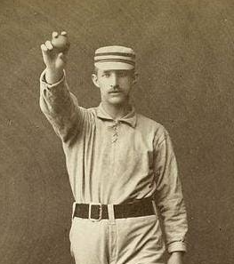

George Chandler (1894 -)

Nicknames:
Positions: Pitcher
Bats: Right
Throws: Right
Born: January 9, 1868, Greenwich, United Kingdom
County:  Middlesex
Middlesex
County Debut:
Club Debut: May 5, 1894: Battersea Excelsiors 2-1 Greenwich Mariners
Clubs: Greenwich Mariners
Honours:
Honours (Individual):
Career Stats (County):
Career Stats (Club):
Batting
| PA | AB | RUNS | RBI | AVG | OBP | SLG | OPS |
|---|---|---|---|---|---|---|---|
| 3 | 3 | 0 | 0 | 0.667 | 0.667 | 1.000 | 1.667 |
Pitching
| W | L | IP | ERA | WHIP | Ks | Ks/9 | BB/9 |
|---|---|---|---|---|---|---|---|
| 9 | 0.00 | 0.44 | 5 | 5.00 | 1.00 |